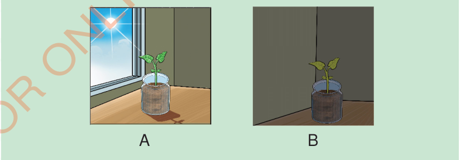

they are grown. Root hairs absorb water and nutrients through osmosis. Once absorbed, the nutrients are transported through the main root, the stem and finally reach different parts of the plant.
Temperature
Plants need an optimum temperature for growth. Temperature is essential for seed germination and photosynthesis. However, if the temperature is too high, plants dry out due to excessive water loss. Very low temperatures can prevent plants from making their own food, seeds from germinating, and can even cause the plant death.
Experiment 3: Investigating the importance of sunlight in plant growth
To determine the importance of sunlight in plant growth
Two (2) seedlings of the same type and size planted in 2 containers labelled A and B and, water, sunlight, a dark box that blocks light from passing through, a ruler and a notebook.
Procedure
- 1. Place a seedling in container A in a spot with sunlight.
- 2. Place a seedling in container B in a dark box that does not allow light to pass through it.
- 3. Water both seedlings with the same amount of water daily.

4. Observe the seedlings for two weeks, measuring plant height every 2–3 days and noting leaf colour and strength. Record the observation in the table.